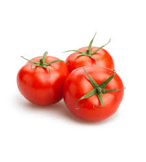
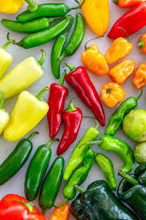
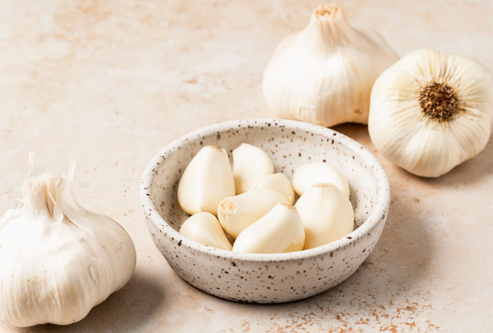
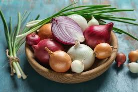
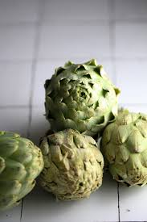

Tomatoes (Tomates)
English: Tomatoes are fresh and juicy, often eaten raw in salads or
made into sauces. They are also the main ingredient in cold soups
like gazpacho and salmorejo.
Español: Los tomates son frescos y jugosos, utilizados en
ensaladas o salsas. También son el ingrediente principal en sopas
frías como el gazpacho y el salmorejo.
Peppers (Pimientos)
English: Peppers come in many colors and flavors, from sweet to
spicy. They are grilled, roasted, or fried and are perfect as a snack or
side dish.
Español: Los pimientos vienen en muchos colores y sabores, desde
dulces hasta picantes. Se asan, tuestan o fríen y son perfectos
como aperitivo o guarnición.
Garlic (Ajo)
English: Garlic gives a strong taste to dishes. It is used fresh,
roasted, or cooked in almost every Spanish recipe.
Español: El ajo da un sabor fuerte a los platos. Se usa fresco, asado
o cocido en casi todas las recetas españolas.
 Onions (Cebollas)
English: Onions give sweetness and depth to food, whether raw in
salads or caramelized in stews. They are also key in making the
famous Spanish omelet.
Español: Las cebollas aportan dulzura y profundidad a la comida,
ya sea crudas en ensaladas o caramelizadas en guisos. También
son clave para hacer la famosa tortilla española.
 Artichokes (Alcachofas)
English: Artichokes are soft and full of flavor, often cooked with
olive oil and lemon. They are a seasonal vegetable loved across
Spain.
Español: Las alcachofas son suaves y llenas de sabor, a menudo
cocinadas con aceite de oliva y limón. Son una verdura de
temporada muy querida en toda España